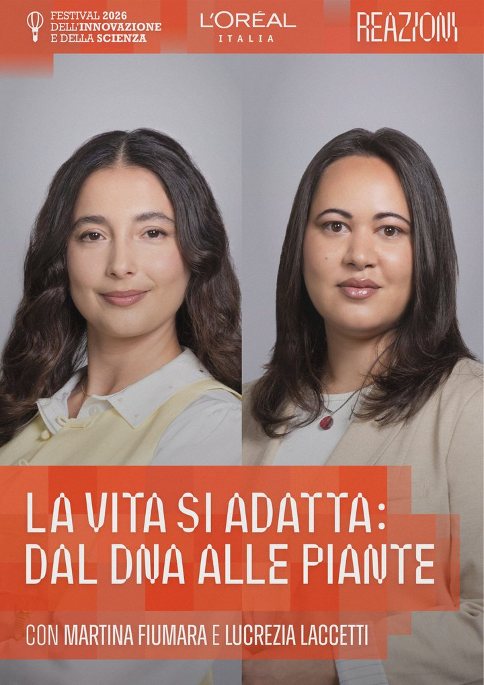

11 October 2026 · Invited talk
La vita si adatta: dal DNA alle piante
Public conference at the XIV Festival dell'Innovazione e della Scienza (theme: “Reazioni”), shared with Martina Fiumara (San Raffaele Telethon Institute for Gene Therapy), both recipients of the 24th Italian edition of the L'Oréal-UNESCO “For Women in Science” Award. The talk addressed how plants persist in extreme environments and respond to climate change.
- Venue
- Biblioteca Archimede, Settimo Torinese (Turin)
- Moderator
- Sandro Orlando, Corriere della Sera